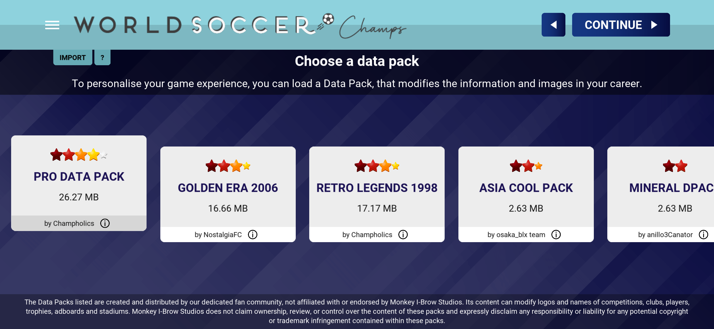
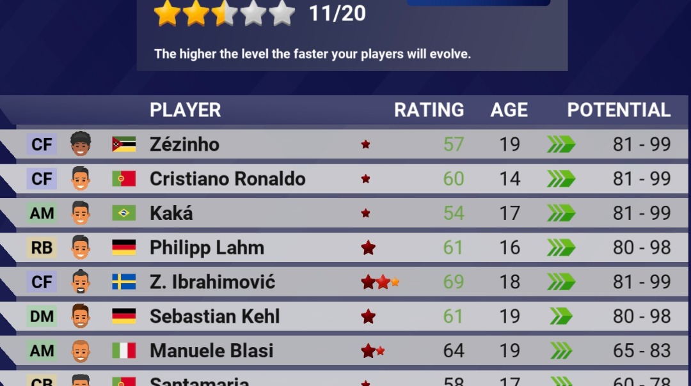

Šta sve možeš raditi u igri World Soccer Champs
Igra World Soccer Champs je zanimljiva fudbalska igra u kojoj igrač ima potpunu kontrolu nad svojim timom. Ona nije samo obična igra u kojoj se igraju utakmice, već pruža mnogo više mogućnosti koje je čine zabavnom i dugotrajnom. Prije svega, u igri možeš izabrati svoj omiljeni klub ili reprezentaciju i voditi je kroz razna takmičenja. Postoji veliki broj liga i turnira iz cijelog svijeta, pa igrač može isprobati različite izazove i taktike. Cilj je osvajati trofeje i postati najbolji tim. Tokom utakmica, igrač direktno učestvuje u igri tako što povlačenjem prsta (swipe) određuje dodavanja, šuteve i kretanje igrača. To znači da nije samo menadžer, već i aktivni učesnik na terenu. Ovaj način igranja čini igru jednostavnom, ali i vrlo zanimljivom. Pored igranja utakmica, veoma važan dio igre su transferi. Možeš kupovati i prodavati igrače, graditi jači tim i razvijati strategiju kako bi pobijedio protivnike. Takođe, možeš pratiti formu igrača i donositi odluke koje utiču na uspjeh ekipe. U igri postoje i razne vijesti i događaji koji dodatno obogaćuju iskustvo. Oni daju osjećaj kao da vodiš pravi fudbalski klub. Svaka sezona donosi nove izazove, pa igrač stalno ima motivaciju da napreduje. Na kraju, World Soccer Champs je igra koja kombinuje zabavu, strategiju i fudbalsko znanje. U njoj možeš biti i trener i igrač u isto vrijeme, što je čini posebnom i zanimljivom za sve ljubitelje fudbala.
Primjer Gameplay-a

Datapackovi u igri World Soccer Champs
U igri World Soccer Champs, datapackovi predstavljaju jedan od najzanimljivijih dodataka koji značajno proširuju mogućnosti igre. Oni omogućavaju igračima da promijene i prilagode sadržaj igre prema svojim željama, čineći svako igranje drugačijim i uzbudljivijim. Datapackovi su posebni fajlovi koji mijenjaju podatke unutar igre, kao što su timovi, igrači, lige i sezone. Zahvaljujući njima, moguće je igrati sa ažuriranim sastavima timova ili se vratiti u prošlost i igrati sa ekipama iz nekih ranijih godina. Na primjer, igrač može izabrati sezonu iz 2006. godine i igrati sa tadašnjim zvijezdama fudbala. Jedna od najvećih prednosti datapackova je ta što omogućavaju personalizaciju igre. Igrači mogu instalirati različite verzije datapackova koje su napravili drugi korisnici i tako dobiti potpuno novo iskustvo. Neki datapackovi donose realnije podatke, dok drugi mogu biti kreativni i sadržavati izmijenjene timove ili neobične scenarije. Instalacija datapackova je obično jednostavna i ne zahtijeva mnogo tehničkog znanja. Kada se jednom dodaju u igru, oni automatski mijenjaju postojeće podatke i omogućavaju igraču da započne novu karijeru sa izmijenjenim sadržajem. Datapackovi takođe produžavaju vijek trajanja igre, jer omogućavaju stalno otkrivanje novih verzija i izazova. Umjesto da igra postane monotona, ona se stalno mijenja i prilagođava interesima igrača. Na kraju, datapackovi su važan dio igre World Soccer Champs jer donose dodatnu kreativnost, raznovrsnost i zabavu. Zahvaljujući njima, svaki igrač može oblikovati igru na svoj način i uživati u potpuno jedinstvenom fudbalskom iskustvu.
Datapack-ovi koji dodju kada se instalira igrica

Wonderkids i potencijal u igri World Soccer Champs
U igri World Soccer Champs, jedan od najvažnijih i najzanimljivijih aspekata jeste rad sa mladim talentima, poznatim kao wonderkids. To su mladi igrači koji imaju veliki potencijal i mogu postati ključni članovi ekipe u budućnosti. Upravo zbog toga, pronalaženje i razvijanje ovakvih igrača predstavlja važan dio strategije svakog igrača. Potencijal u igri pokazuje koliko se neki igrač može razviti tokom vremena. Mladi igrači obično počinju sa slabijim ocjenama, ali uz dovoljno utakmica i dobru formu mogu značajno napredovati. Igrač mora pažljivo birati koje će talente razvijati, jer ulaganje u prave igrače može donijeti velike rezultate u kasnijim sezonama. Wonderkids su posebno vrijedni jer često mogu postati najbolji igrači u timu. Njihov razvoj zavisi od toga koliko igraju, kakve rezultate ostvaruju i kako ih igrač koristi u taktici. Zbog toga je važno dati im šansu i strpljivo raditi na njihovom napretku. Još jedna zanimljiva stvar u igri su takozvani regenovi. To su novi igrači koji se pojavljuju tokom igre i mogu zamijeniti starije generacije. Ono što je posebno lijepo jeste to što regenovi u ovoj igri nisu samo kopije penzionisanih igrača, već mogu biti potpuno nasumični. To znači da se može pojaviti igrač sa potpuno novim imenom, osobinama i različitim potencijalom. Ovaj sistem čini igru nepredvidivom i uzbudljivom, jer igrač nikada ne zna kakav će se novi talenat pojaviti. Nekada se može desiti da pronađeš buduću zvijezdu potpuno slučajno, što dodatno motiviše istraživanje i razvoj tima. Na kraju, sistem wonderkidsa, potencijala i regenova u igri World Soccer Champs daje dubinu i dugoročnu zanimljivost. On podstiče igrače da razmišljaju unaprijed, ulažu u mlade talente i grade tim koji će dominirati godinama.
Primjer Potencijala u igrici

Kako timovi dobijaju svoje ocjene i zvjezdice
U igri World Soccer Champs svaki tim ima svoj rejting i broj zvjezdica koji predstavljaju njegovu jačinu i kvalitet. Ovaj rejting se formira na osnovu ukupnih sposobnosti igrača u timu, kao što su brzina, šut, dodavanje i odbrana. Što su igrači bolji pojedinačno, to će i ukupni rejting ekipe biti veći, a samim tim i broj zvjezdica. Zvjezdice služe kao jednostavan prikaz snage tima, pa tako slabiji timovi imaju manje zvjezdica, dok najjači timovi mogu imati maksimalan broj. Kada igrač napreduje kroz karijeru i dovodi bolje fudbalere putem transfera, rejting ekipe raste, što se odmah vidi kroz povećanje zvjezdica. Također, forma igrača igra određenu ulogu, jer igrači koji su u dobroj formi mogu privremeno poboljšati ukupni učinak tima. S druge strane, loša forma ili slabiji igrači mogu smanjiti efikasnost ekipe na terenu. Zbog toga je važno pravilno birati sastav i razvijati tim kroz vrijeme. Na kraju, rejting i zvjezdice u World Soccer Champs predstavljaju kombinaciju kvaliteta igrača i uspješnog upravljanja timom, što direktno utiče na rezultate utakmica i uspjeh u takmičenjima.
Primjer preko tabele
| Tim | Ocjena odbrane, veznog reda i napada | Broj zvjezdica |
|---|---|---|
| Barcelona | 85 / 86 / 87 | 5 |
| Real Madrid | 84 / 85/ 88 | 5 |
| Man City | 83 / 85 / 87 | 5 |